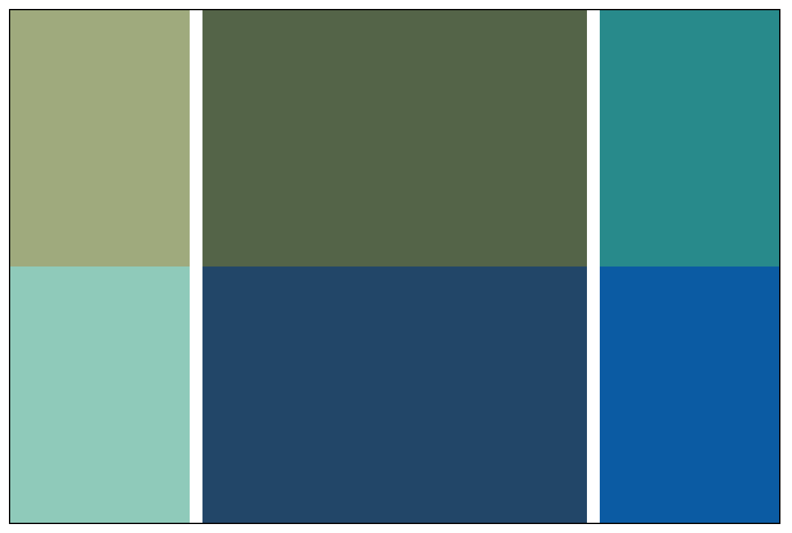

CSS Grid 布局不完全学习笔记
注意，这篇文章只是我自己在学习 CSS Grid 布局过程中的一些笔记。更加完整的指南请参考 MDN 的文档或者CSS-TRICKS 的这篇文章。
基础例子
html：
<div class="container">
<div class="box box-1"></div>
<div class="box box-2"></div>
<div class="box box-3"></div>
<div class="box box-4"></div>
<div class="box box-5"></div>
<div class="box box-6"></div>
</div>
css:
.box {
color: white;
text-align: center;
}
.box-1 {
background-color: #A9B388;
grid-area: box-1;
}
.box-2 {
background-color: #5F6F52;
grid-area: box-2;
}
.box-3 {
background-color: #2D9596;
grid-area: box-3;
}
.box-4 {
background-color: #9AD0C2;
grid-area: box-4;
}
.box-5 {
background-color: #265073;
grid-area: box-5;
}
.box-6 {
background-color: #0766AD;
grid-area: box-6;
}
.container {
border: 1px solid;
width: 600px;
height: 400px;
display: grid;
grid-template-columns: 1fr 50% 1fr;
grid-template-rows: repeat(2, 1fr);
grid-template-areas:
'box-1 box-2 box-3'
'box-4 box-5 box-6';
}
效果：

在这里，给 div.container 设置了 diaplay: grid; 属性之后，div.container 就会变成一个 grid container，它的所有直接子元素都是一个 grid item。
对于每一个 grid item，可以用 grid-area 属性取一个名字。在 grid container 的 grid-template-areas 属性中可以用这个名字应用到对应的 grid item。
可以看出来，Grid 布局实际上是把一个区域划分成一个一个的“小格子”，或者叫“grid cell”。
合并多个 grid cell
利用 grid-template-areas 属性可以合并多个 grid cell。例如把左边两个 grid cell 合并成一个：
.container {
...
grid-template-areas:
'box-1 box-2 box-3'
'box-1 box-5 box-6'; /* 把 box-4 改成 box-1 */
}
这样就可以让 box-1 同时占据左边的两个 grid cell。效果：
我们发现，box-1 占据了原本属于 box-4 的位置，那 box-4 这个元素去哪里了？可以在 div.box-4 这个元素里加一些内容看看：
<div class="container">
...
<div class="box box-4">box-4</div>
...
</div>
可以看到 box-4 被挤到了 grid container 的右下角。之前没有看到只是因为 box-4 没有内容，也没有显示地设置宽高。事实上，没有出现在 grid-template-areas 属性里的 grid item 都会被挤到 grid container 的右下角，而且是沿着 z 轴堆叠起来，而不是按照文档流排列。
搞一下破坏
虽然一般情况下你不会这样做，但我们还是可以写一些奇怪的配置。
例如你把 grid-template-areas 改成这样：
.container {
...
grid-template-areas:
'box-1 box-1 box-3' /* 注意这里有两个 box-1 */
'box-1 box-5 box-6'; /* 这里也有一个 box-1 */
}
就会发现所有的 grid item 都不见了（其实正如上面说的，只是被挤到了右下角）。并且用浏览器开发者工具的 Styles 面板去观察此时的 grid-template-areas ，发现它的值其实是不合法的，也就等于没有设置 grid-template-areas。简单来说就是同一个 grid-area 不能同时出现在横向和纵向排列中，除非 grid-template-areas 里面只出现同一个 grid item，这时候就变成用同一个 grid item 铺满一整个 grid container。
.container {
...
grid-template-areas:
'box-1 box-1 box-1'
'box-1 box-1 box-1';
}
加一些间隔
假设我们希望在每一列之间加一个 10px 宽的空白间隔，有以下几种方式。
grid-template
第一种做法是在 grid-template-areas 中每一行的每两个 grid-area 之间加一个“.”，同时还需要在 grid-template-columns 中相应的位置加上期望的间距值，在这里就是 10px。
.container {
...
grid-template-columns: 1fr 10px 50% 10px 1fr; /* 这里多了两个 10px */
...
grid-template-areas:
'box-1 . box-2 . box-3' /* 这里每两个 grid-area 之间多了一个 . */
'box-4 . box-5 . box-6';
}

grid-column-gap
上面的方法需要同时改动 grid-template-areas 和 grid-template-columns 两个属性，有点麻烦。用 grid-column-gap 只需要一行代码就能实现同样的效果：
.container {
...
grid-column-gap: 10px;
}
非正常的做法
上面两种都是添加间距的正常方法，当然也有“不那么正常”的做法。直接把 grid-template-areas 中的某一个 grid area 换成 “.” ，对应的区域就会变成空白：
.container {
...
grid-template-areas:
'box-1 . box-3' /* 这里的 box-2 变成了 . */
'box-4 . box-6'; /* 这里的 box-5 变成了 . */
}

可以看到，box-2 和 box-5 都“消失”了，变成了空白。同样，“消失”的 grid item 只是被挤到了 grid container 的右下角。只要调整一下 grid-template-columns 的属性值，让中间的空白区域变小，看起来就会是一个正常的空白间距了。
但是这种方法会把某个 grid item 挤走，实际开发中可能会导致出现非期望中的结果。话虽如此，但也可以用这种方法来玩一些花样。例如实现一个跑马灯抽奖动画：

相关 js 代码：
const container = document.querySelector('.container');
const list = [
"'. box-2 box-3' 'box-4 box-5 box-6'",
"'box-1 . box-3' 'box-4 box-5 box-6'",
"'box-1 box-2 .' 'box-4 box-5 box-6'",
"'box-1 box-2 box-3' 'box-4 box-5 .'",
"'box-1 box-2 box-3' 'box-4 . box-6'",
"'box-1 box-2 box-3' '. box-5 box-6'",
]
let i = 0
setInterval(() => {
if (i === list.length) i = 0
container.style.gridTemplateAreas = list[i++];
}, 300)
调整顺序
在不用 Grid 布局的时候，如果要调整几个子元素的顺序，一般需要修改 html 的节点顺序或者用 css 的定位。在 Grid 布局里，可以利用 grid-template-areas 来改变这些 grid item 的顺序：
.container {
...
grid-template-areas:
'box-4 box-6 box-2'
'box-1 box-3 box-5';
}
当然，再怎么随意排列也不能超出 grid-template-areas 的有效值范围。例如这样就是无效的：
.container {
...
grid-template-areas:
'box-4 box-6 box-2 box-1'
'box-3 box-5';
}
如果确实想要实现第一行有 4 个 grid item，第二行有两个 grid item 的效果，可以参考上面用 grid-template 设置间距的方法。
再说 grid-template
通过上面的例子可以发现，其实 grid-template-areas 的主要作用就是控制 grid item 的排列组合。即使不设置 grid-template-areas 的值，grid container 还是会根据 grid-template-columns 和 grid-template-rows 把自身的区域划分成多个区块。通过浏览器的开发者工具可以看出这一点：

我认为 grid-template-areas 属性值的语法是比较直观的。就是对着上面划分出来的区域把 grid-area 一个一个往里面填。至于每一个区域自身的内容要如何布局，就再用 Grid 的 justify-items、 align-items 等属性或者其他 css 的布局方式。用起来还是比较简单的。
总结
CSS Grid 布局的要点主要是两个：
- 划分区域：利用
grid-template-columns和grid-template-rows在 grid container 里划分多个区域（也叫 grid cell）； - 排兵布阵：通过
grid-template-areas对各个grid-area进行排列组合、填充 grid cell。
只要掌握了这两点，就能把 Grid 布局用起来。
如果想对 Grid 中的元素进行更多控制，就要用到 justify-items、 align-items 等属性。不过如果已经熟悉 Flexbox 的话，想再掌握 Grid 中的这些属性就很容易了。